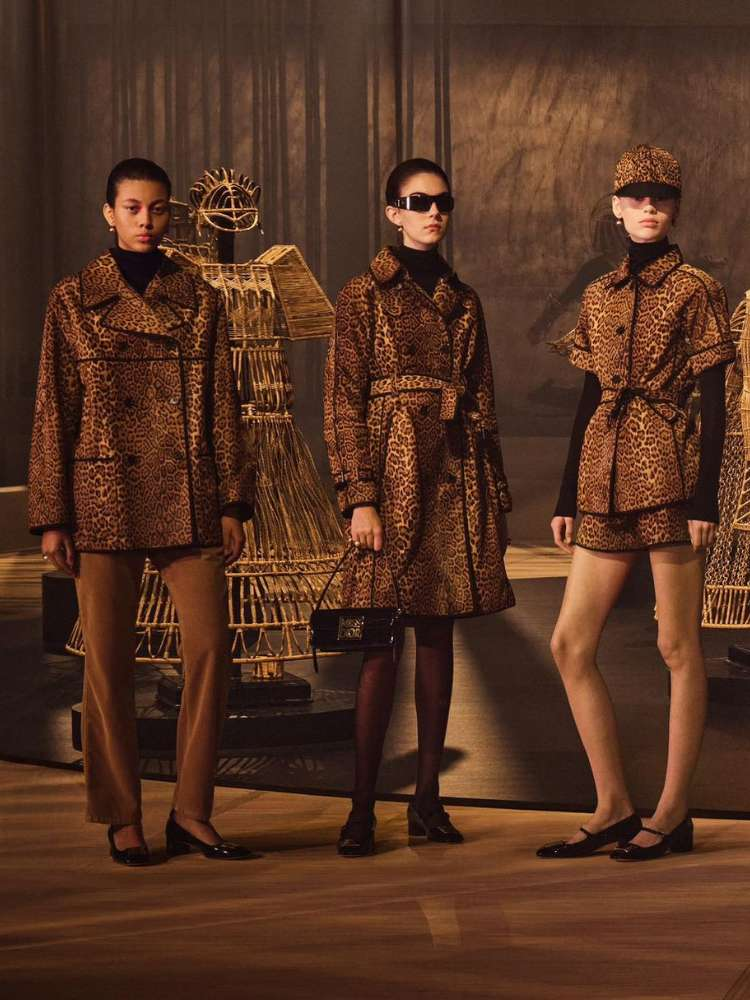

   html>
<html lang="en">
<head>
    <meta charset="UTF-8">
    <meta name="viewport" content="width=device-width, initial-scale=1.0">
    <link rel="shortcut icon" href="ICONE.ico" type="Aula-03/ICONE">
    <title>Paris Fashion Week</title>
    <style>
        body {
            background: linear-gradient(to bottom, #FFFFFF, #E0E0E0);
            text-align: center;
        }
        h1, h2 {
            font-size: 30px;
            color: black;
            font-family: Arial, sans-serif;
        }
        a {
            color: blue;
            text-decoration: none;
        }
    </style>
</head>
<body>
    <h1>PARIS FASHION WEEK</h1>
    
    <p>Aqui estarei apresentando o que é a Paris Fashion Week e suas tendências para 2024.</p>
    
    
    
    <ul>
        <li>Pretinho nada básico</li>
        <a href="pretinho.html" target="_blank">Looks pretos e bem exagerados estarão em alta</a>
        
        <li>Looks desconstruídos</li>
        <a href="looks descontruidos.jpgl" target="_blank">Aquela combinação que muitos acham nada com nada, estará com tudo em 2024</a>
        
        <li>Cargo da cabeça aos pés</li>
        <a href="cargo.html" target="_blank">A tendência cargo voltará com mais força ainda</a>
        
        <li>Franjas</li>
        <a href="franjas.html" target="_blank">As polêmicas franjas também estão de volta esse ano, e algumas celebridades já começaram a usá-las</a>
        
        <li>Mob Wife</li>
        <a href="mob-wife.html" target="_blank">É uma tendência que tem aparecido bastante nas redes sociais, sendo bem aclamada pelos amantes de maquiagem</a>
    </ul>
    
    <h2>MEU PERFIL NO GITHUB</h2>
    <a href="https://github.com/biahmira" target="_blank">Acesse o meu perfil GitHub</a>

    <h2>PARA MAIS INFORMAÇÕES SOBRE A FASHION WEEK</h2>
    <a href="https://stealthelook.com.br/essas-sao-as-8-tendencias-do-verao-2024-de-acordo-com-a-paris-fashion-week/" target="_blank">
        Veja aqui mais detalhes sobre as tendências.
    </a>

    <h3>PARA MAIS INFORMAÇÕES SOBRE A FASHION WEEK</h3>
    <a href="https://github.com/biahmira/Site2024/blob/8102715f96340d1757087cc18b23aee5134b976e/Paris%20Fashion%20Week.pdf" target="_blank">
        Veja aqui mais detalhes sobre as tendências.
    </a>
</body>
</html>
